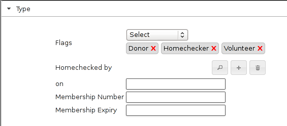
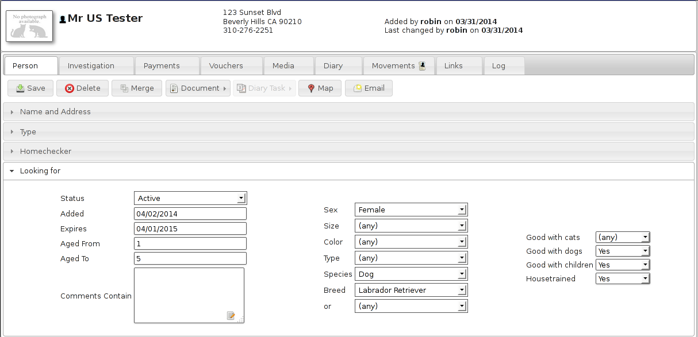
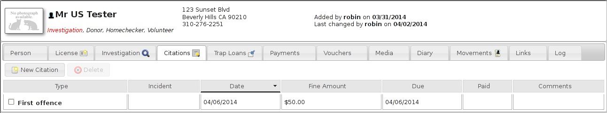

5 People
In addition to animals, Animal Shelter Manager can track information about people. People represent any person or organisation who has any contact with the shelter, be it staff member, volunteer, care officer, animal adopter/fosterer, etc.
5.1 Find Person Screen

The advanced find person screen is used to search for groups of people matching criteria. It works exactly the same as the advanced find animal screen, however there are far less criteria as Animal Shelter Manager needs to know far less about people.
A number of filters can also be applied here:
-
Adopters - show any owners with an adoption movement
-
Animal Care Officers - show any owners with the Animal Care Officer flag set
-
Banned - show any owners with the Banned flag set
-
Donors - show any owners with the Donor flag set
-
Fosterers - show any owners with the Fosters Animals flag set
-
Homechecked - show any owners with the Homechecked flag set
-
Homecheckers - show any owners with the Homechecker flag set
-
Members - show any owners with the Member flag set
-
Not Homechecked - show any owners with the Homechecked flag not set
-
Potential Adopters - show any owners with active criteria, but no adoption movements
-
Retailers - show any owners with the Retailer flag set
-
Shelters - show any owners with the Other Animal Shelter flag set
-
Staff - show any owners with the Staff flag set
-
Vets - show any owners with the Vet flag set
-
Volunteers - show any owners with the Volunteer flag set
5.2 Person Screen

The person screen is also grouped into separate tabbed sections with an information banner (similar to the animal screen). The screen allows you to store contact and classification information for an owner, along with payments they make, any useful multimedia, diary notes and animal movements, etc.
Facilities are also supplied to write documents to an owner, email them from within ASM and find their address on a map.
5.2.1 Person Types

The Type panel allows you to set various classification flags for the person, along with comments and details on membership to your organisation.
Note the gift aid registered flag for people in the UK, setting this will default the gift aid flag when creating donations for this owner (they can be unset where necessary) for tracking gift aid claims to HMRC.
5.2.2 Owner Warnings
When you create new owner records and adopt animals to owners, the system will perform some checks for you. Some of these require options to be set in Settings->Options under the Movement tab (they are all switched on by default).
-
Name Check: The system will check to see if there is someone with a similar name on file to the one you just entered. If there is, you will be shown a list of matches, with the option to view them and prompted as to whether you want to continue.
-
Address Check: The system will check to see if you have an owner on file at the same address as the one listed. This is useful for fraudulent owners who are banned from adopting animals getting family members to do it for them.
-
Postcode Check: The system will warn the operator if they attempt to adopt an animal to a new owner who lives in the same postcode as the animal's original owner.
-
Previous Owner Check: System will warn the operator if they attempt to adopt an animal to a new owner with a name and address similar to someone who has brought an animal into the shelter.
-
Non-Homechecked: The system will warn the operator if they attempt to adopt an animal to an owner who has not been homechecked.
-
Banned: The system will warn the operator if they attempt to adopt an animal to an owner who has been banned from adopting animals.
5.2.3 Looking For

Using the “looking for” panel, you can supply criteria for animals that person is interested in adopting - it's a cut down version of the advanced find animal screen with just the criteria relevant for a prospective owner.
Selecting active from the dropdown causes this person's criteria to be included in the list of actively searching people. You also need to set a date to make the criteria active, and optionally one to make it inactive if you would like to give up looking after a period of time. To view matches for currently active owners, run the “Person Looking For” report under ASM->Person->Match Looking For. Because it can be quite intensive, the looking for report is run as part of the daily tasks by ASM so it may take 24 hours for new people to appear. An alert will also appear on the dashboard when matches are found.
Only one set of criteria can be held per person.
5.2.4 Homechecker

Animal Shelter Manager allows you to keep a list of your volunteer homecheckers in the owner database.
To use this facility, simply set the “Homechecker” flag on the type panel, and add the areas they are willing to check in the Areas box under the Homechecker panel.
It is best to include both the area name and postal/zipcode in the box (eg: Rotherham S60). You can then use the find owner screen to enter the name of an area you want to check by postcode or name and you will receive a list of homecheckers who cover that area.
When marking an owner as homechecked, you can link to the person record of the person who did the check, and it will show up in their homecheck history.
5.2.5 License

The license tab holds details of animals licensed to this owner. This tab can be removed with the option “Disable animal control functionality from menus and screens” in the remove unwanted functionality section of Settings-Options-Options.
5.2.6 Investigation

ASM allows you to keep notes on any investigation currently going on against a person.This tab can be removed with the option “Disable animal control functionality from menus and screens” in the remove unwanted functionality section of Settings-Options-Options.
5.2.7 Citations

The citations tab holds details of citations and fines given to this owner. This tab can be removed with the option “Disable animal control functionality from menus and screens” in the remove unwanted functionality section of Settings-Options-Options.
5.2.8 Trap Loans

The trap loan tab holds details of traps loaned to this owner. This tab can be removed with the option “Disable animal control functionality from menus and screens” in the remove unwanted functionality section of Settings-Options-Options.
5.2.9 Payments
ASM also allows you to track payments from people here. Payments are any form of income and can be broken down into classifications, such as adoption fees, donations, specific fundraising donations, sponsorship, etc.

You can use this information to produce financial reports and graphs.
Payments can have a date due as well as a date received and can be assigned a frequency. If the frequency is anything but “One-Off”, ASM will create the next payment in the sequence when you mark the current payment as received. If a payment has a due date of today or older, an alert will be shown on the main screen.
5.2.10 Vouchers
Lots of UK shelters run a voucher system to allow poorer owners on benefits cheaper access to care from their clinics. Vouchers have an issue and expiry date, along with a cash sum. You can set up as many different voucher types as you like to cover different areas of medical care.
The voucher tab allows you to log vouchers given to owners here.
5.2.11 Links
The links tab enables you to view every other record in the system that this person is attached to.
5.2.12 Merging People
The merge button on the owner screen toolbar allows you to choose another person record to merge into this one. This is useful, because on occasion, users will key the same owner in twice with a slightly different name and/or address and probably adopt an animal to them, etc.
Open the person record that you want to merge into (the one that you want to keep). Hit the merge button and choose the duplicate owner record.
ASM will reparent all of the movements, links, media, etc from the duplicate person into the currently open record. When it's finished doing that, the duplicate person record will be removed. Note that person details are never copied during a merge, the merge just moves all the satellite data from the selected person to the open person before deleting the selected one.